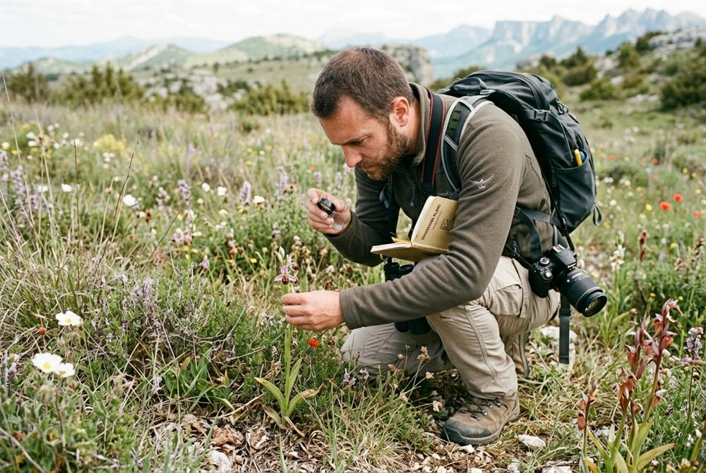

Des projets variés
Énergies renouvelables, aménagement, restauration de milieux : éolien, photovoltaïque, ZAC, éco-réserves.
ÉolienPhotovoltaïqueRestauration
Recrutement
Offres d'emploi pour des profils spécialisés : naturalistes, écologues, chargés d'études.

Rejoindre Altifaune, c'est travailler sur des projets de terrain variés au sein d'un bureau d'études qui s'engage pour la biodiversité.
Le détail de chaque offre (« en savoir plus ») est consultable sur la page recrutement d'altifaune.fr.
Énergies renouvelables, aménagement, restauration de milieux : éolien, photovoltaïque, ZAC, éco-réserves.
Avifaune, chiroptères, entomofaune, herpétofaune, mammifères, ichtyologie, flore et habitats, eau et sols, paysages.
Détecteurs d'ultrasons, optiques HD, pièges photographiques, véhicules tout-terrain et application de saisie développée pour Altifaune.
Une part du chiffre d'affaires consacrée à l'acquisition de terrains, des éco-réserves et des locaux en ossature bois.